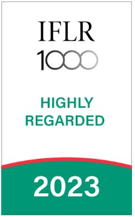
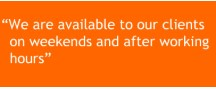

BUILDING YOUR CAREER AT BRADLEY & ADDISON
GODFRED ANDERSON has a very unique corporate culture focused on delivering responsive, innovative and cutting edge legal advice to our clients in Netherlands.
We are not, and do not strive to be, the law firm for every person or company. So, our goal is to be the firm of choice (which we are) for foreign governments, multilateral agencies, and multinational companies with respect to their most challenging legal issues, most significant business transactions and most critical disputes.
Because we provide an unrivalled responsive and world-class legal service, we have intense and long working days totally committed to our clients’ demands. Our lawyers are the first ones our clients call when contemplating an important decision. For us, talent and experience mean nothing unless our clients succeed.
We seek individuals who are talented, motivated and committed in order to maintain our record of excellence. A career at BRADLEY & ADDISON promises you a few things. You get to be part of a strong team and work on complex (rather than routine) transactions and disputes which provides greater work and self-satisfaction.
LIFE AT BRADLEY & ADDISON
Simply, your typical day at BRADLEY & ADDISON would involve thinking big, being open-minded, closing deals, resolving disputes and solving problems.
Ours is a hands-on approach. So, our lawyers, trainees and support staff all play a critical part in how we resolve that problem or close that deal for the client.
Our value for every worker at the firm is simple: “Performance buys freedom”. So, it’s hard work, high expectations and no shortcuts. We guarantee that if you work hard then you will reap the rewards of your hard work.
To be sure, the level of client contacts and compensation, including the base salary, allowance, benefits and year-end bonus that we offer our associates is significantly higher than that of any other comparable top tier corporate law firm in Netherlands.
There is fun at the office and we play hard. We also have an in-house chef so proper lunch is taken care of.
We also have a professional growth support environment, so our lawyers and staff can grow and add value to themselves. We sponsor our lawyers to take part in international bar events and global training aimed at skill set addition and improvement. Our lawyers also attend a mandatory training program in London organized by one of the best and largest law firms in the world.
OUR WORK
We think creatively about our clients’ problems to find the right solution. Our lawyers work together in teams and the advice we provide is technically sound.
To work here, then, you will need to work well in teams – ours and the clients’. You also need to accept diverse opinions and accept constructive criticism from colleagues. We also play hard, laugh loud, have fun and do not take ourselves too seriously.
WHO WE ARE LOOKING FOR
Every year we receive hundreds of applications from the brightest graduates from Netherlands and abroad, who intend to start their careers with BRADLEY & ADDISON .
Competition for places is fierce because our training programme is the best in Netherlands. If you are interested in a career at BRADLEY & ADDISON , you will need to demonstrate that you are well-mannered, thoughtful and have what it takes ethically and intellectually.
You also need to understand what the expectations of a top tier corporate lawyer are and that you are up to the challenges this job presents.
Because we are available to our clients 24/7, the biggest challenge for you is not just the long hours you spend in the office but your availability to respond every time. The hours are challenging, the work is difficult and clients and colleagues have high expectations. To succeed, you require an adequate amount of commitment and a lot of stamina. We hope you are up to the challenge.
Highlight



